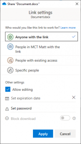

Modern Collaboration: Sharing Files in OneDrive for Business and SharePoint
I hope you are enjoying the Modern Collaboration blog series. If you haven’t read the previous articles in the series, I highly recommend you do. We started this series by broadly talking about what Modern Collaboration is and how it impacts business. The second post was a brief introduction to some of the Microsoft Office 365 products, such as OneDrive, SharePoint, and Microsoft Teams. Now we are diving deep into the different individual products and how-to-use them. The first deep-dive was on Accessing and Saving files in OneDrive for Business and SharePoint. Now we will talk about how you can share your files from OneDrive for Business and SharePoint!
Sharing Options
Before we dive exactly into the how-to share them, I’d like to review all of the sharing options that are available to you. When sharing a file, the permission in which you share is crucial so that you can understand who can use the link, how long it will work, and if they can cause more damage than you intended to your files.
The following sharing options we will review give you the ability to ‘allow editing.’ The allow editing checkbox is critical to verify every time you create a sharing link. In most instances, you may only want people to look at a file and provide feedback to you. In this case, you should uncheck the ‘allow editing’ checkbox; if you leave it checked, they can change the file contents.

Anyone with the link
Using the ‘Anyone with the link’ option is an easy one to select. You know if the email is forwarded, the link will work for anyone that receives it. Having the link work for anyone might sound appealing initially; however, you must consider that the link will work for ANYONE. Keep in mind; this means if the email is forwarded to someone nefarious, that person can delete content, move it around and mess the file up. Now, in the next blog post in the series, you will see how to restore previous versions and deleted files; but this may be unnecessary if you set your sharing permissions correctly initially.
When using ‘Anyone with the link,’ you receive additional options that you won’t get with other links. For example, you can set an expiration date for the link. Setting an expiration is something I highly recommend you do if you have to use this type of link.
Additionally, you can set a shared password that someone must enter before they can access the link. Using a shared password is slightly more secure than just a link that works; however, the password is typically in the same message as the link, which means if it is forwarded to someone nefarious, that person can still do significant harm.
People in (Organization Name) with the link
I like this option quite a bit. It means the link will work for anyone else who works at your organization. It will require them to log in to their work or school account, and it will tie their name to any changes made to the file.
Keep in mind, though, if the file’s content is sensitive, this does risk exposure to other people within the organization seeing it.
People with existing access
The ‘People with existing access’ sharing link is unique. You may or may not use it frequently. I find myself only using it when I have someone on my team asking for a file that they could get to themselves, but maybe in the middle of a meeting and need it now, or when I am preparing an agenda for a meeting, and I want a quick link to the file. You will notice, this sharing option does not have the ‘Allow editing’ checkbox. The reason is that it isn’t granting new permissions, only giving you a quick link to access the file, and it uses their existing permissions to the file.
Specific people
The specific people sharing link is by-far the most secure way to share files, especially if you grant editing access to sensitive content. The only way the link will work for people is to specify their name or email in the sharing dialog. If you only type one person, then copy the link to Outlook. Anyone you send it to; except, the person you entered into the sharing dialog, can not open the link.
Sharing files
Now that you know the different sharing options that are available to you. We can now dive into sharing the files with other people inside and outside of your organization.
The fantastic part about sharing files in both OneDrive for Business and SharePoint is that the sharing dialog is the same for OneDrive for Business and SharePoint and across all of the different ways of accessing it.
Through Microsoft Office apps
To access the sharing dialog while using the Office Apps, you will need the document open and follow the below steps
- Open the file you wish to share
- In the top right of the Office App, click Share
- Verify which sharing option you want to use, staying mindful that it is best to be the most restrictive with your permissions to keep your data safe.
- Type the email addresses you wish to share with
- Optionally type a message to include with the file
- Click Send
Through the OneDrive for Business or SharePoint websites
To access the sharing dialog while using the web, you must first navigate where you wish to share the file or folder and follow the below steps.
- Select the file or folder you wish to share
- Click Share on the top bar
- Verify which sharing option you want to use
- Type the email addresses you want to share with
- Optionally type a message to include with the file
- Click Send
By using the Sync Client on Windows 10
To access the sharing dialog while using the OneDrive Sync client, you must first navigate where you wish to share the file or folder and follow the below steps.
- Right-click the file or folder you wish to share
- Click Share on the menu that shows up
- Verify which sharing option you want to use
- Type the email addresses you want to share with
- Optionally type a message to include with the file
- Click Send
By sharing files through OneDrive for Business and SharePoint, you unlock many rich features that we will dive into in future blog posts. You will see automatic versioning and co-authoring highlighted, which will open a whole new world of possibilities for collaboration and access to information. Keep an eye out for the next post in the Modern Collaboration blog series on Restoring Files in OneDrive for Business and SharePoint.